cumulative effects of forces over
can directly be imported into the equations of motion such that solution without the knowledge of acceleration will be possible.
\[ \delta U = \boldsymbol{F} \cdot d\boldsymbol{r} \]
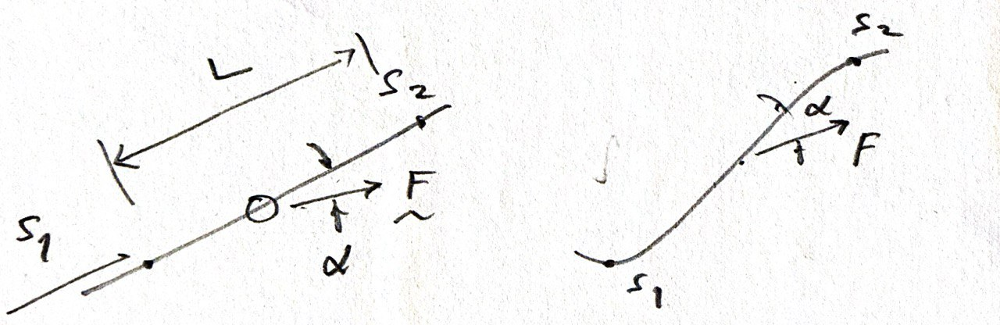
\[ U_{1-2} = \int_1^2 \boldsymbol{F} \cdot d\boldsymbol{r} \]
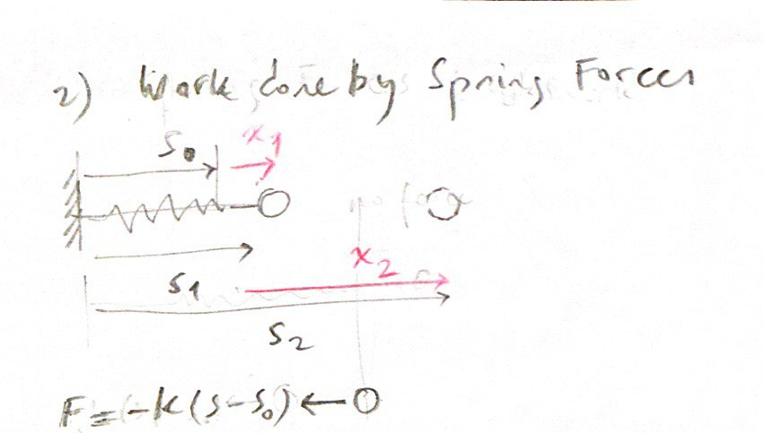
\[ U_{1-2} = -\frac{1}{2} k (x_2^2 - x_1^2) \]
This implies
the springs’ undeformed configuration.
The elastic potential function will be used in the next section. \[ V^e = \frac{1}{2} k x^2 \]
\(x\) is measured from the undeformed spring
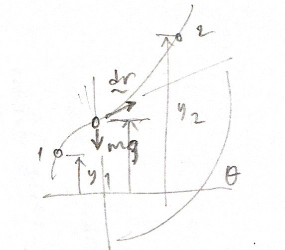
\[ U_{1-2} = -mg(y_2 - y_1) \]
gravity does
of the mass.
The gravitational potential function will be used in the next section. \[ V^g = mgh \]
\[ T = \frac{1}{2} mv^2 \] and \[ U_{1-2} = T_2 - T_1 \]
The total work done by the resultant unbalanced force \(F\) in moving the mass from 1 to 2 equals the corresponding change in kinetic energy of the mass.
\[ P = F \cdot v \]
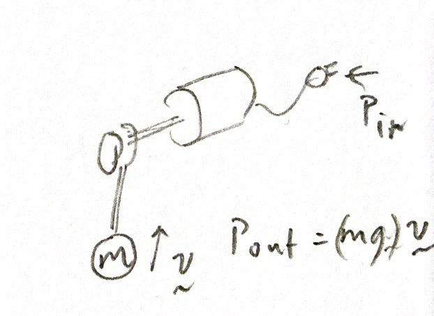
\[ \frac{P_{out}}{P_{in}} \]
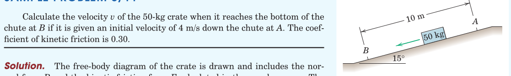
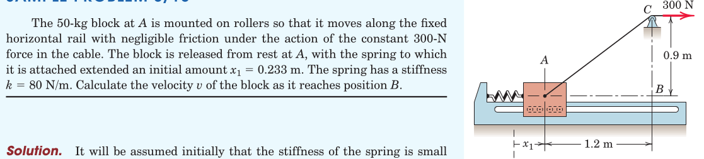
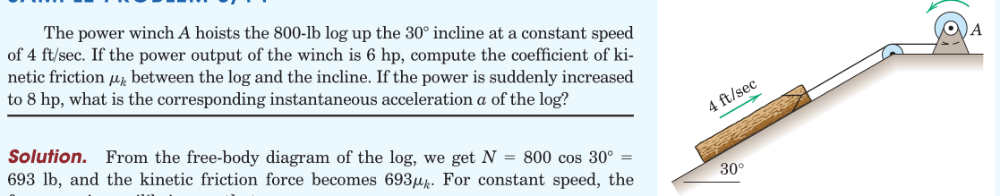
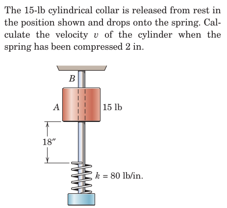
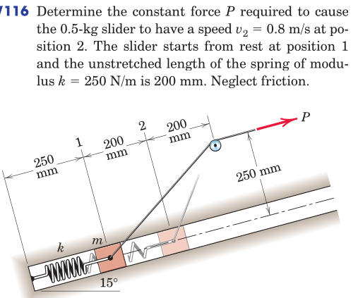
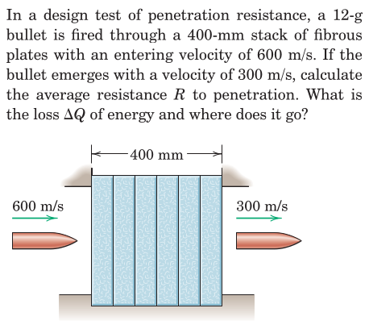
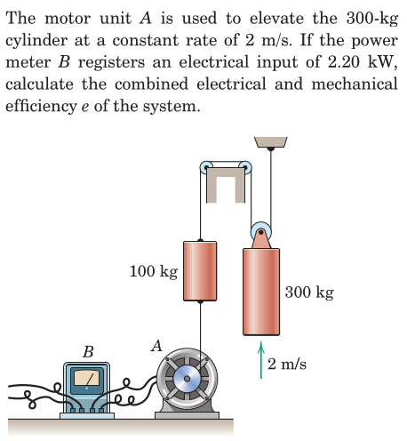
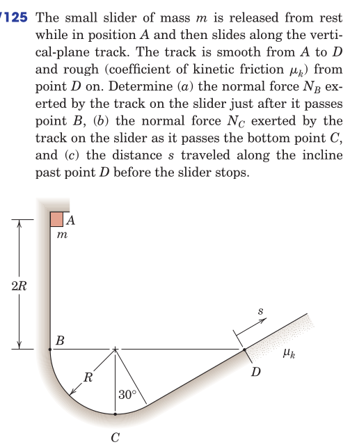
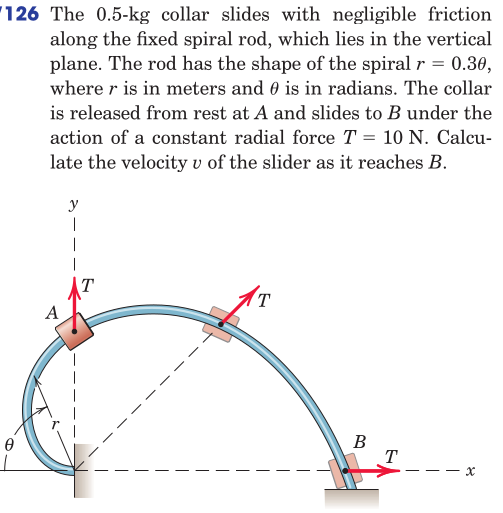
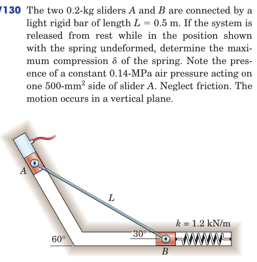
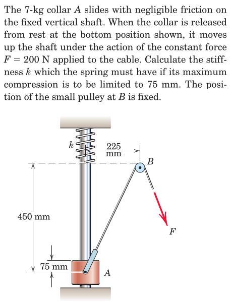
From Hibbeler, Engineering Mechanics: Dynamics: Chapter 14: 4, 6, 12, 15, 18, 19, 21, 25*, 28, 30, 35, 40, 41